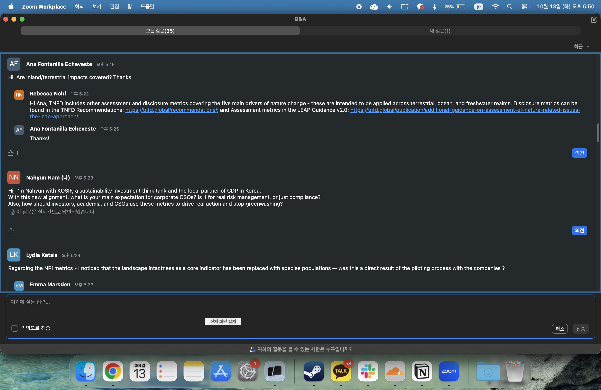
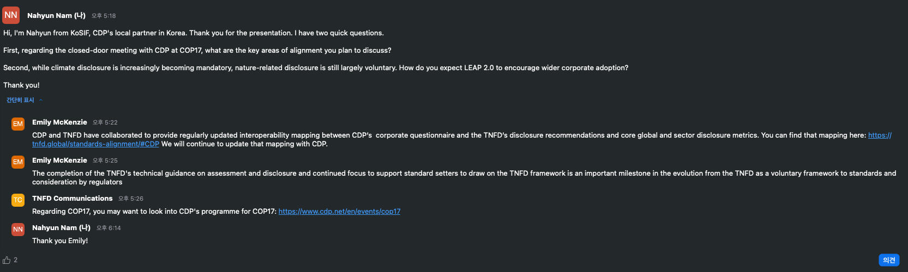

LEAP에서 나온 분석 결과를 SBTN 목표와 전환계획에 다시 활용하기 쉬워졌다.
한눈에 보기
이번 업데이트의 핵심은 ‘새 프레임워크’보다 연결성이다
기업이 자연 관련 이슈를 평가한 뒤 목표를 세우고 실행·공시로 나아갈 때, 같은 데이터와 분석을 이어서 쓸 수 있도록 세 기관의 접근법을 맞췄다.
LEAP의 네 단계는 유지된다. 다만 자연 상태 측정, 위험·기회 정량화, 전환계획, 금융기관 포트폴리오, 경관·해양경관 접근이 보강됐다.
연구원이 기억할 세 문장
- TNFD는 평가와 공시의 뼈대를 제공한다.
- SBTN은 우선순위를 과학기반 목표와 실행으로 전환한다.
- NPI 지표는 두 접근법이 공유하는 자연 상태 측정 기반이다.
600개 이상의 후보를 생태계 범위·상태, 종 멸종위험, 종 개체군의 네 지표로 정리했다.
현재 준비 수준과 공급망을 추적할 수 있는 범위에 맞춰 시작하되, 과학적 엄밀성과 책임성은 놓치지 않는다.
LEAP 2.0
첫 번째 전면 업데이트에서 무엇이 달라졌나
- 2023년 v1.0 발표 이후 기업과 금융기관 등 시장 참여자의 의견과 후속 기술 작업을 반영했다.
- Locate–Evaluate–Assess–Prepare의 골격은 그대로지만, 더 깊이 평가하고 그 결과를 행동으로 옮기도록 보완했다.
L
Locate
- 경관·해양경관 접근과 가치사슬 관점을 강화한다.
- 직접 운영뿐 아니라 upstream·downstream에서 자연과 맞닿는 위치, 추적 가능성, 우선지역을 함께 본다. 위치 기반
E
Evaluate
- NPI의 자연 상태 지표를 육상·담수·해양 영역에 통합해 의존성과 영향을 해석한다.
- 침입외래종 측정, 생태계 범위와 상태, 종 멸종위험에 관한 지침도 보강됐다. 공통 측정 기반
A
Assess
- 자연 관련 위험평가와 기회의 식별·평가를 구체화하고, 금융기관 포트폴리오 평가 지침을 추가했다.
- 환경범죄가 의존성·영향·위험·기회 분석에 미치는 영향도 고려한다. 재무적 연결
P
Prepare
- 평가 결과를 자연 전환계획과 대응, 목표, 공시로 이어가는 방법이 구체화됐다.
- SBTN의 과학기반 자연목표를 세울 때 함께 쓸 수 있는 용어·도구·산출물도 더 명확히 안내한다. 행동과 공시
2026.10.14 · TNFD 세부 웨비나 · LEAP v2.0과 권고안 2026년 10월판
TNFD 기술팀이 직접 설명한 LEAP 2.0의 여섯 가지 개정
- 10월 13일 공동 웨비나가 TNFD·SBTN·NPI의 연결을 다뤘다면, 이 세션에서는 TNFD 사무국 기술팀의 영역별 담당자가 개정 내용을 설명했다.
- 아래에는 공동 웨비나에서 다루지 않은 세부사항과 실무 변화만 정리했다.
Emily McKenzie(기술총괄) · Rebecca Nohl(지표·측정) · Annelisa Grigg(환경범죄) · Alessandra Melis(표준·규제, 위험평가) · Miriam van Gool(섹터, 금융기관) · Nicolas Poolen(자연 전환계획) · David Álvarez García(ISO 공동의장)
처음이자 마지막 개정
LEAP v2.0과 권고안 2026년 10월판으로 TNFD는 평가·공시 기술지침 개발을 마무리했다.
임시 지표 확정
임시(placeholder) 지표였던 자연 상태·침입외래종 지표를 핵심 글로벌 공시지표로 확정했다.
ISO 표준화 착수
- LEAP를 ISO/AWI 26239로 표준화하는 작업이 시작됐다.
- 목표 완성 시점은 약 18개월 뒤인 2028년이다.
TNFD의 다음 단계Emily McKenzie
평가·공시 지침 개발 완료, 이후 중점은 기준 제정 지원과 확산
- LEAP는 2021년 이후 네 차례 베타 공개와 240건의 파일럿, v1.0 발표 뒤 60건 이상의 추가 파일럿을 거쳤다.
- TNFD는 v2.0이 LEAP의 처음이자 마지막 개정이라고 밝혔다.
- 권고안도 이번 2026년 10월판이 처음이자 마지막 개정이다.
공시 외 LEAP 활용
- ISSB의 자연 관련 공시 기준 작업, GRI 101, ISO 17298, ESRS가 LEAP를 공시용 평가의 기반으로 언급한다.
- 지난 3년 동안 LEAP는 공시 외에도 기업 전략 검토, 전환계획, 목표 설정, 자연기반해법 등 투자 기회 발굴, 기업 자연자본회계에 쓰였다.
앞으로의 네 가지 중점
- 글로벌 기준 제정기관 지원: ISSB·GRI 지원을 이어가고, ISO 표준 개발에 참여하며, TNFD–ESRS 같은 대응 매핑을 갱신한다.
- 시장 인식 확산: 글로벌·지역 네트워크와 웨비나·콘퍼런스를 활용한다.
- 역량 강화: 기업·금융기관·규제기관 대상 교육을 사무국과 외부 교육 파트너가 함께 제공한다.
- 시장 장벽 해소: 가치사슬 전반의 자연 데이터 개선 권고에 기반한 데이터 관련 이니셔티브를 검토한다.
확정 공시지표Rebecca Nohl
자연 상태·침입외래종 지표의 핵심 글로벌 공시지표 확정
- 2023년에는 합의된 측정 방법이 없어 자연 상태와 침입외래종을 임시(placeholder) 지표로 두었다.
- 전문가 워크숍, 파일럿, 공개 의견수렴을 거쳐 2026년 권고안에서 확정했다.
- 핵심 지표에는 ‘준수하거나 미준수 사유를 설명하는(comply or explain)’ 방식이 적용된다.
| 영역 | 2023 권고안 | 2026 권고안 (확정) |
|---|---|---|
| 자연 상태 | 임시 핵심지표: 생태계 상태, 종 멸종위험 추가 지표: 생태계 범위, 생태계 연결성, 종 개체군 크기 |
C5.0생태계 범위 C5.1생태계 상태 C5.2종 멸종위험 종 개체군 크기는 추가 지표로 유지 생태계 연결성은 2026 지표 목록에 없음 |
| 침입외래종 | 임시 핵심지표: 비의도적 유입을 막기 위한 조치 추가 지표: 비의도적으로 유입된 종·품종·계통의 수 또는 범위 |
C4.0침입외래종의 유입·정착·확산을 막기 위한 조치 추가 지표: 새로 정착했거나 새로 유입된 침입외래종의 수 또는 범위 |
종 개체군 크기를 추가 지표로 둔 이유
- 꽃가루 매개 곤충에 의존하는 작물처럼 특정 종에 의존하거나 영향을 주는 경우에는 의사결정에 유용하다.
- 하지만 개체군 크기를 직접 측정할 데이터 확보가 어렵다는 점이 파일럿과 의견수렴에서 확인됐다.
- 추가 지표는 중요하고 비례적일 때 공시를 권장하지만 comply or explain 대상은 아니다.
침입외래종 지표 범위 확대 이유
- 파일럿 결과 의도적 유입까지 포함한 모든 유입 경로를 봐야 하고, 유입 이후의 정착과 확산 단계도 관리 대상이 되어야 한다는 점이 확인됐다.
- 용어도 ‘종·품종·계통’에서 ‘침입외래종’으로 통일했다.
- IPBES는 기록된 동식물 멸종의 16%에서 침입외래종이 유일한 원인이었다고 보고했다.
2
부속서 2 · 자연 상태 평가 전면 개편
- 평가 단계에서 자연 상태 정보를 쓰는 방법과, 공시지표에 대응하는 평가지표(assessment metrics)의 개념을 설명한다.
- 자연 상태는 L4 민감지역 선별, E3 의존성·영향 측정, P3·P4 공시에 쓰인다.
- NPI 초기 측정지침, Align 프로젝트 산출물, UN SEEA 생태계 회계를 측정 근거로 연결한다.
4
부속서 4 · 침입외래종 평가 신설
- 생물다양성협약(CBD)의 유입경로 분류를 활용한 경로 기반 관리 방식을 소개한다.
- L2·L3에서 유입·정착·확산에 기여할 수 있는 활동과 가치사슬을, L4에서 관련 지역의 민감도를, E에서 발생 가능성과 현재 영향을, A에서 위험과 관리로 생길 기회를 본다.
- P에서는 관리계획과 지표 공시를 준비한다.
- 금융기관이 기업의 침입외래종 공시를 활용하는 가상 사례도 담았다.
재무적 중요성 근거
- TNFD는 Global Canopy, 옥스퍼드대와 함께 자연 관련 위험의 재무 영향 근거 600건 이상을 모은 데이터베이스와 논문을 공개했다.
- 모든 위험은 결국 생태계나 종의 변화를 일으키는 영향 요인과 연결됐다.
- 침입외래종 관련 근거는 기업가치, 운영 차질, 지출 항목에서 확인됐다.
환경범죄Annelisa Grigg
환경범죄는 별도 평가가 아닌 LEAP 전 단계의 고려사항
- TNFD는 환경범죄를 가치사슬과 금융 시스템에 내재된 위험으로 보며, 사업상 영향이 커지고 있다고 설명했다.
- 전 세계 불법 경제 규모는 연간 약 3,000억 달러다.
- TNFD는 독립 지침(2026년 9월), LEAP 반영, 공시 권고 이행지침 반영의 세 가지로 이를 다뤘다.
TNFD의 작업 정의
- 환경에 직접 피해를 주는 불법 행위다.
- 국내법상 불법인 행위, 해당 관할에 구속력 있는 국제협약 위반, 인허가 조건 위반을 포함한다.
- 자연 관련 이슈를 식별·평가하기 위한 정의이며, 범죄 행위의 법적 정의나 법적 판단 근거로 쓰려는 것이 아니다.
- 범주는 불법 산림벌채와 토지 전환, 불법 채굴과 자원 추출, 불법 어업, 야생생물 밀거래, 폐기물·오염의 다섯 가지다.
- 운송이나 금융 서비스처럼 이를 가능하게 하는 활동도 중요하게 본다.
평가 정확도에 미치는 영향
- 불법 벌채 목재가 기업이 모르는 상태로 공급망에 포함되면, 파악되지 않은 산림파괴와 생태계 훼손이 발생한다.
- 그러면 생태계 상태, 자연 상태, 경우에 따라 자연과 맞닿는 위치까지 잘못 파악하게 된다.
- 재활용으로 보낸 플라스틱 폐기물이 불법 투기된 사례처럼, 영향이 어디서 발생하는지 모르는 상황도 생긴다.
- 발표에서는 불법 어업으로 2015년 스리랑카 수산업의 EU 수출이 막힌 사례, 공급망 불법 벌채 문제로 미국 목재 바닥재 유통사가 1,300만 달러 벌금을 받은 사례를 들었다.
L
Locate · 특히 중요한 단계
- 노출은 특정 원자재, 지역, 섹터, 운송 경로에 집중될 수 있다.
- 범죄 활동은 추적 가능성을 낮춰 자연과의 접점 파악을 어렵게 한다.
- 우선지역 설정을 재검토해야 한다.
E
Evaluate · 특히 중요한 단계
- 환경범죄는 의존성과 영향의 규모·강도·발생 가능성을 높이는 동시에 실제 규모 파악을 어렵게 한다.
- 기존 데이터에는 환경범죄 관련 의존성과 영향이 충분히 잡히지 않을 수 있다.
A
Assess
시장·정책·법적·평판 위험이 커지는 동시에, 선제적 모니터링과 추적 체계를 갖춘 기업에는 회복탄력성과 경쟁우위라는 기회가 생긴다.
P
Prepare
- 대응 전략, 거버넌스, 실사, 공시에 반영한다.
- 기존 컴플라이언스·금융범죄 대응·공급업체 실사 체계를 우선 활용하되, 평가의 불확실성에 맞춰 보강할 수 있다.
공시 요구사항은 추가되지 않았다
- 새 공시 축(pillar)이나 요구사항을 만들지 않고 네 축의 이행지침에 반영했다.
- 이사회 감독과 경영진 역할(거버넌스), 사업모델·전략·우선지역(전략), 직접 운영과 가치사슬의 식별·관리 및 전사적 위험관리 통합(위험·영향 관리), 중요한 불확실성과 데이터 한계 공시 및 실사 등 대응 목표(지표·목표)가 그 예다.
- 특히 환경범죄를 중요한 불확실성의 원천으로 명시적으로 고려하라는 점이 새롭다.
- 공시는 특정 개인이나 기관을 지목하거나 범죄 혐의를 주장하는 방식이 되어서는 안 된다.
위험평가와 기회Alessandra Melis
Assess 단계 구조 유지, 위험 발생 경로 설명 보강
- 2025년 6월 재무 영향 근거 검토, 2026년 7월 위험평가 방법 논의문서를 거쳐 개정했다.
- 기업이 자연 관련 위험을 중요하게 보지 않거나, 식별과 측정을 어려워한다는 의견이 출발점이었다.
A1
위험·기회 식별
- 의존성·영향이 자연 상태와 생태계 서비스의 변화를 거쳐 위험으로 이어지는 경로를 노출·위해요인·취약성(exposure·hazard·vulnerability)이라는 위험관리 부서의 용어로 다시 그렸다.
- 물리적 위험과 전환 위험의 두 버전이 있다.
- 기회 식별 지침도 구조화했다.
A2
기존 위험관리 조정
- COSO, ISO 등 기존 위험관리 프레임워크와의 대응을 더 명확히 했다.
- 기후와 자연의 상호작용 설명을 넓히고, 기회 관리 프로세스를 따로 다룬다.
A3
측정과 우선순위
- 재무 영향이 전달되는 경로(transmission channels) 개념을 명확히 하고, 위험과 기회가 기업 전망에 미치는 영향을 평가하는 정성·정량 방법을 안내한다.
- 기회는 성과, 실현 가능성, 근거, 불확실성, 상충관계까지 본다.
A4
중요 정보 판단
- IFRS 지속가능성 공시기준으로 넘어가는 ‘진입로(on-ramp)’로 위치를 분명히 했다.
- 재무적 중요성 관점에서 공시할 정보를 가려내는 단계다.
자연 관련 기회의 정의 명확화
- 자연과 관련된 모든 사업 기회가 자연 관련 기회는 아니다.
- 기업에는 비용 절감, 매출·가치 증대, 운영 회복탄력성, 평판 같은 성과를 주고, 동시에 자연에 대한 부정적 영향을 줄이거나 긍정적 영향을 만들어야 한다.
- 운영 효율·회복탄력성, 신규 제품·서비스 시장, 공급망 회복탄력성, 사업모델 혁신, 금융 혁신의 다섯 묶음을 예시로 제시했다.
- 고정된 분류체계가 아닌 예시다.
사례와 시나리오
- 6개 섹터, 7개 본사 소재국에 걸친 신규 사례 7건을 더했다.
- 미국 음료기업 Naked Juice 사례는 침입외래종인 감귤 그리닝병과 가뭄, 이상기상이 브라질산 오렌지 공급을 줄여 원가와 공급 압박으로 이어지는 경로를 보여준다.
- 시나리오 분석은 다음 개정 대상이다.
- TNFD는 NGFS 작업을 지원하면서 2023년 시나리오 분석 지침과 고급 접근법 논의문서를 반영해 지침을 갱신할 계획이다.
금융기관 포트폴리오Miriam van Gool
금융기관 지침: 포트폴리오 평가 사례 80건 이상 분석 반영
- NGFS(2026년 4월)와 유럽보험연금감독청(EIOPA, 2025년 6월) 보고서가 LEAP를 금융기관의 참고 자료로 언급했다.
- EIOPA는 유럽경제지역(EEA) 보험사의 회사채·주식 직접투자 약 2.3조 유로 중 30%가 하나 이상의 생태계 서비스에 크게 의존하는 경제활동과 관련된다고 분석했다.
v2.0 추가 내용
- 사업모델, 금융활동, 익스포저 유형별로 맞춘 지침
- 우선순위 설정, 위치 기반 분석, 데이터 한계, 비례적 접근에 관한 실무 지침
- 포트폴리오 단위와 고객·자산 단위 평가를 결합하는 방법과, 자연 관련 이슈가 금융 위험으로 이어지는 경로
문서 내 위치
- 본문 곳곳에 ‘금융기관 추가 고려사항(Additional considerations for financial institutions)’ 상자가 같은 색과 형식으로 들어가 있다.
- 예를 들어 A3의 상자는 하향식 포트폴리오 분석과 상향식 고객 평가를 결합하는 방법을 다룬다.
- 발표에서 제시한 원칙은 넓은 범위의 1차 선별, 필요 영역에 대한 정밀 평가, 반복 보완이다.
- 처음 적용하는 기관에는 1차 선별부터 수행하도록 권고했다.
Candriam
자산운용사 · Locate 2
- 포트폴리오 단위 생물다양성 발자국으로 위험 집중 지점을 찾은 뒤, 기업과 가치사슬을 더 자세히 평가했다.
- 넓은 범위의 선별과 정밀 분석을 결합했다.
Banco de Bogotá
은행 · Locate 4
- 섹터 익스포저와 물 관련 위치 기준으로 고객 324곳을 우선 선정하고, 이들 고객 포트폴리오 잔액의 90%에 해당하는 위치를 파악했다.
- 위치 기반 정밀 평가를 우선순위가 높은 곳에 한정했다.
E.SUN
금융지주(대만) · Assess 3, Locate
- 회사채·채권·주식 포트폴리오에 자연 관련 시나리오를 적용해 잠재 손실을 추정했다.
- 대출·투자 자산의 물 공급 부족 지역, 개발 가능 경사지, 생물다양성 핵심지역 노출도 지도로 분석했다.
발표에서 제시한 금융기관의 평가 활용 목적은 위험관리와 금융 의사결정, 고객 인게이지먼트와 스튜어드십, 금융상품 혁신, 전략·목표·전환계획·공시의 네 가지다.
KoSIF 관점의 해석. 대만 금융지주 E.SUN 사례는 국내 금융기관이 포트폴리오 위치 데이터와 자연 위험 지도를 결합하는 분석을 설계할 때 참고할 수 있다.
전환계획 · 경관 접근 · SBTNNicolas Poolen
P2 명칭 변경: 목표 설정, 전환계획, 성과관리
- 가장 큰 변화는 Prepare 단계의 P2가 ‘목표 설정, 전환계획, 성과관리’로 명시된 것이다.
- 전환계획을 LEAP의 공식 구성요소로 명시했다.
자연 전환계획
- 글로벌생물다양성프레임워크(GBF)가 요구하는 전환에 대응하고 기여하기 위한 목표·행동·책임체계·자원 계획이다.
- 기후 전환계획 체계를 기반으로 한다.
- TNFD는 15개 조직의 파일럿을 거쳐 2025년 11월 관련 지침을 냈고, TNFD 현황 보고서 설문 응답 조직의 80% 이상이 전환계획에서 자연을 다루고 있거나 다룰 계획이라고 답했다.
- LEAP에서는 범위 설정(Scoping) 단계부터 전환계획을 평가 결과의 활용처로 제시하고, Prepare 단계에 목표 설정, 전환금융 전략, 우선순위 설정 지침과 사례를 더했다.
경관·해양경관 접근
- 한 장소의 여러 이해관계자가 함께 지속가능성 목표를 추구하는 협력 전략이다.
- 개별 기업 단독으로 관리하기 어려운 위험이 많다는 점이 배경이다.
- 효과 증대, 모니터링·실사 비용 분담, 필요한 규모의 행동 확보, 한 곳에서 줄인 영향이 다른 곳으로 이전되는 영향 누출(impact leakage) 방지가 기대 효과로 제시됐다.
- Locate·Evaluate·Assess에서는 경관 단위의 공동 모니터링·평가 정보를 활용하고, Locate에서 영향권을 정할 때, Prepare에서 우선 이슈를 경관 수준에서 다룰 때 참조한다.
1
용어 연결
- LEAP와 SBTN 방법론의 용어를 연결했다.
- 예를 들어 SBTN의 압력(pressures)과 TNFD의 영향 요인(impact drivers)이다.
2
자연 상태 지표 정렬
NPI 지표를 바탕으로 두 방법론의 자연 상태 지표를 맞추되, 각자의 활용 목적에 맞게 조정했다.
3
SBTN 2단계 순위 방법론 안내
민감지역이 너무 많을 때 추가 분석 대상을 고르는 방법으로 SBTN Step 2(우선순위 설정)의 순위 방법론을 명시적으로 안내한다.
4
목표 설정 실제 사례
LEAP로 자연 관련 이슈를 평가한 뒤 SBTN 목표 설정에 들어간 육상·해양 사례를 새로 넣었다.
ISO 표준화David Álvarez García
LEAP의 ISO 국제표준화 착수
- ISO/TC 331이 TNFD가 제안한 LEAP 기반 표준 개발을 승인해 ISO/AWI 26239로 등록했다.
- 발표자는 이에 따라 LEAP가 TNFD의 활동 기한과 관계없이 정기 검토와 국가표준기구 간 합의로 유지·관리된다고 설명했다.
추진 체계와 일정
- 신설 공동작업반 ISO/TC 331/JWG 1 ‘Biodiversity, Natural Capital and Finance’가 맡는다.
- TC 331(생물다양성), TC 207/SC 1(환경경영시스템), TC 322(지속가능금융)의 세 기술위원회가 공동작업반을 구성한 첫 사례다.
- 공동의장은 Ece Ozdemiroglu(영국)와 David Álvarez García(스페인)다.
- 첫 회의는 11월 예정이며, 전문가 참여는 각국 국가표준기구를 통해 신청한다. 약 18개월 안에 완성하는 것이 목표다.
기존 ISO 표준과의 관계
- 기존 표준과 중복되지 않고 보완하도록 설계한다고 설명했다.
- 2026년 생물다양성과 자연자원 이용을 반영해 개정된 ISO 14001은 경영시스템을, LEAP는 그 안에서 쓸 세부 평가 지침을 제공한다.
- ISO 17298(생물다양성 행동계획), ISO 14054·14008(자연자본 계정과 환경영향의 화폐가치 평가), ISO 17620(생물다양성 순증 지표)과도 연결된다.
- Q&A에서 TNFD는 ISO 작업이 NPI·WBCSD가 주도하는 자연 측정 프로토콜(Nature Measurement Protocol)과 별개 절차라고 답했다.
추가 확인 필요
- LEAP v1.0으로 평가한 기업의 v2.0 전환·갭 분석 방법은 웨비나에서 따로 설명되지 않았다. 공식 문서에 전환 안내가 있는지 확인이 필요하다.
- ISSB 자연 관련 공개초안의 공개 시점과 LEAP 인용 범위.
- 시나리오 분석 지침 개정 일정.
- CDP–TNFD 매핑이 CDP 질의서의 SBTN 활용 항목까지 포함하는지.
하나를 선택하는 문제가 아니라, 서로 다른 역할을 이어 쓰는 구조
TNFD · LEAP 2.0
이해하고 평가한다
자연 관련 의존성·영향·위험·기회를 식별하고 평가해 관리와 공시의 근거를 만든다.
SBTN · Nature 2.0
목표를 정하고 행동한다
어디에서 얼마나, 언제까지 행동해야 하는지 과학기반 목표와 실행계획으로 전환한다.
NPI · State of Nature
변화를 공통 방식으로 잰다
- 자연 상태를 일관되게 측정할 최소 공통 지표를 제공한다.
- 별도의 보고 프레임워크가 아니다.
주의할 점
- 상호운용성은 TNFD 평가를 하면 SBTN 목표가 자동 완성된다는 뜻이 아니다.
- 관련 데이터·분석·산출물을 재사용할 수 있다는 뜻이며, SBTN의 장소 기반 목표 방법론과 검증 요건은 별도로 충족해야 한다.
현장 질문
“실제 위험관리인가, 또 하나의 컴플라이언스인가?”
세 기관 연사의 답변은 이번 기준 연계가 무엇을 지향하는지 가장 직접적으로 보여준다.
10.13 공동 웨비나 · 실시간 답변 질문으로 선택
서로 맞춰진 기준이 기업의 ‘실제 행동’을 어떻게 끌어낼 것인가
질문은 이번 기준 연계가 최고지속가능성책임자(CSO)에게 무엇을 요구하는지, 그리고 투자자·학계·시민사회가 지표를 어떻게 활용해야 기업의 실질적인 행동을 끌어내고 그린워싱을 막을 수 있는지를 물었다.
“With this new alignment, what is your main expectation for corporate CSOs? Is it for real risk management, or just compliance?”
— Nahyun Nam, KoSIF · Zoom Q&A, 17:23 KST

Tony Goldner · TNFD
규제보다 시장의 위험 인식이 더 꾸준한 동력이 된다
- 자연 이슈는 CSR이나 규제 준수에 머무르지 않고 위험관리와 회복탄력성의 문제로 옮겨가고 있다.
- 나라마다 규제 속도는 달라도 투자자·은행·보험사는 이미 포트폴리오의 자연 위험을 살피기 시작했다.
- 필요한 도구도 마련된 만큼 기업은 LEAP 평가에 착수해 내부 논의를 시작하고 대응 방안을 짜야 한다는 답변이다.
Erin Billman · SBTN
먼저 움직인 기업에서 사업상 효과가 확인되고 있다
- 과학기반 자연목표를 적용한 기업들은 의사결정이 나아지고, 자원을 중요한 곳에 집중하며, 공급업체의 참여를 끌어내는 등 사업에 도움이 되는 변화를 확인하고 있다고 설명했다.
- 경영진과 이사회에 ‘왜 지금 행동해야 하는가’를 설명할 때 이런 실제 사례를 근거로 삼으라는 제안이다.
Marco Lambertini · NPI
위험·기회가 바로 보이지 않더라도 운영과 공급망을 조금만 검토하면 확인된다
- 출발점은 자연 관련 위험과 기회를 이해하는 일이다.
- 위험과 기회가 바로 확인되지 않더라도 운영과 공급망을 조금만 검토하면 빠르게 파악된다는 설명이다.
- TNFD·SBTN·NPI는 이렇게 발견한 문제를 실제 행동으로 옮기도록 돕는 도구다.
KoSIF 관점의 해석
- 답변의 공통점은 ‘공시 준수’가 종착점이 아니라는 데 있다.
- LEAP에서 위험·기회를 발견하고, SBTN으로 행동 수준을 구체화하며, NPI 지표로 자연 상태의 변화를 추적해야 한다.
- 투자자와 시민사회는 기업에 관련 정책이 있는지만 볼 것이 아니라, 이 흐름이 실제 의사결정과 자원배분에 반영됐는지를 물어야 한다.
10.14 TNFD 세부 웨비나 · TNFD 서면 답변
COP17 CDP 회의의 정렬 의제와 자연 공시 채택 확대 방안
- 다음 날 TNFD 세부 웨비나에서도 질문을 제출했다.
- COP17 CDP 비공개 회의에서 논의할 정렬 의제, 그리고 기후 공시는 의무화되는 반면 자연 공시는 여전히 자발적인 상황에서 LEAP 2.0이 기업의 채택을 어떻게 넓힐지를 물었다.
“First, regarding the closed-door meeting with CDP at COP17, what are the key areas of alignment you plan to discuss?”
“Second, while climate disclosure is increasingly becoming mandatory, nature-related disclosure is still largely voluntary. How do you expect LEAP 2.0 to encourage wider corporate adoption?”
— Nahyun Nam, KoSIF · Zoom Q&A, TNFD LEAP 2.0 웨비나

Emily McKenzie · TNFD
CDP 질의서와 TNFD 지표는 이미 매핑되어 있다
CDP와 TNFD는 CDP 기업 질의서와 TNFD 공시 권고, 핵심 글로벌·섹터 공시지표를 서로 대응시킨 상호운용성 매핑을 함께 만들어 정기적으로 갱신하고 있으며, 향후에도 CDP와 함께 갱신할 예정이라고 답했다. 매핑 보기
Emily McKenzie · TNFD
자발적 프레임워크에서 표준·규제 검토 대상으로의 전환
TNFD가 평가·공시 기술지침을 완성하고, 기준 제정기관이 TNFD 프레임워크를 활용하도록 계속 지원하는 것 자체가 자발적 프레임워크에서 표준과 규제기관의 검토 대상으로 전환하는 중요한 단계(milestone)라고 답했다.
TNFD Communications
COP17은 CDP 프로그램을 참고
- COP17 관련해서는 CDP의 COP17 프로그램을 참고하라고 안내했다.
- 비공개 회의에서 다룰 정렬 의제 자체에 대한 답은 없었으며, 이는 아래 CDP 후속 과제에서 계속 확인할 부분이다.
공통 측정 기반
600개 이상에서 네 가지로 좁힌 자연 상태 지표
- NPI는 사업장(site)과 그 주변의 경관·해양경관(landscape/seascape)을 함께 살피도록 설계했다.
- TNFD는 평가와 공시에 세 지표를 우선 적용하고, 종 개체군은 추가 지표로 두었다.
사업장(site)의 범위
- NPI 측정지침은 TNFD 용어를 따라 조직이 운영 또는 재무 통제권을 가진 직접 운영 활동과 장소를 사업장으로 본다.
- 그러나 자연은 사업장 경계에서 끊기지 않는다.
- 따라서 주변 경관·해양경관의 생태적 맥락과 공급망에 놓인 지점도 따로 평가해야 한다.
국내 실무 시사점
기업 인게이지먼트에 활용할 핵심 내용
- “무엇을 공시해야 하는가”만으로는 부족하다.
- 분석 범위, 데이터 재사용, 목표의 과학적 근거, 실제 경영 의사결정까지 이어지는지 확인해야 한다.
이미 LEAP을 수행한 기업
- 기존 네 단계 분석을 폐기하거나 전면 재수행할 필요는 없다.
- 자연 상태 측정, 침입외래종, 위험·기회, 전환계획, 경관 접근을 갭 분석한다.
- 기존 위치·압력·의존성·영향 데이터를 SBTN 목표 설정에 재사용할 수 있는지 확인한다.
처음 시작하는 기업
- 공급망을 완벽하게 추적할 수 있을 때까지 기다리지 말고, 현재 확보한 데이터로 우선지역부터 좁힌다.
- 직접 운영과 upstream·downstream을 구분하되, 핵심 영향이 공급망에 있으면 분석에서 제외하지 않는다.
- 자연 상태와 압력 지표를 혼동하지 않고 함께 사용한다.
투자자·금융기관
- 공시 유무보다 위험 식별이 포트폴리오 의사결정으로 이어졌는지 묻는다.
- 목표가 장소 기반 과학과 연결되는지, 기준연도·범위·검증 상태를 확인한다.
- 기업별 데이터의 불완전성을 인정하되 개선 경로와 자원배분을 함께 평가한다.
그린워싱 점검
- ‘Nature Positive’ 선언과 자연 상태의 측정 가능한 개선을 구분한다.
- 회피·감축보다 복원 활동만 부각하는지 살핀다.
- 운영경계 밖의 주요 공급망 영향을 누락했는지, 좋은 사례만 선별했는지 점검한다.
적용 전,
스스로 확인할
다섯 가지 질문
- 평가 범위에 직접 운영, upstream, downstream이 구분되어 있는가?
- 압력·대응 지표뿐 아니라 자연 상태 지표가 포함됐는가?
- 우선지역 선정 근거와 데이터 해상도·한계가 설명되어 있는가?
- 위험·기회가 재무·전략·투자 의사결정과 연결되어 있는가?
- 목표, 실행계획, 공시가 같은 분석 기반 위에서 연결되는가?
CDP 연계
질의서와 기업 인게이지먼트를 잇는 후속 과제
CDP 질의서에 SBTN 활용 항목이 추가되면서, 기업의 공개 답변을 평가·우선순위 설정·목표·행동의 흐름으로 해석할 수 있는 추가 컨텍스트가 필요하다.
확보할 컨텍스트
- CDP와 SBTN 간 정렬이 실제 질의서 문항, 응답 가이드, 데이터 활용에 어떻게 반영되는지 확인한다.
- 기업 인게이지먼트 시에는 SBTN 활용 여부를 묻는 데서 그치지 않고, 어떤 평가 결과가 목표와 실행계획으로 이어졌는지 살펴볼 필요가 있다.
- 10월 14일 TNFD 세부 웨비나에서는 CDP 기업 질의서와 TNFD 공시지표 간 상호운용성 매핑이 이미 공개되어 정기적으로 갱신되고 있다는 답을 받았다.
- 답변은 CDP 질의서와 TNFD 공시 권고·지표 간 매핑에 관한 것이며, 이 매핑에 CDP 질의서의 SBTN 활용 항목이 포함되는지는 추가 확인이 필요하다. 관련 답변
COP17 비공개 패널
From Assessment to Ambitious Action: Delivering Against the Nature-Positive Transition
- 2026년 10월 25일 09:30–10:30 AMT
- COP17 Blue Zone · NPI Pavilion
- CDP 주도, 25–30명 비공개 라운드테이블
- 자연 전환계획, 과학기반 자연목표, 금융과 다자 협력을 통해 평가를 실행으로 옮기는 방안을 다룬다.
- 이 자리에서 SBTN의 Finance Sector Engagement Program이 WWF·CDP 협력으로 출범할 예정이다.
추가 확인 포인트
- 행사 공식 페이지는 협력기관을 ‘WWF’로 표기하며 WWF France라고 특정하지 않는다.
- WWF France의 역할과 CDP 질의서 내 SBTN 항목의 세부 운영 방식은 CDP 담당자에게 별도 확인한다.
질문 노트
발표 이후 더 살펴볼 쟁점
- 두 웨비나의 Q&A 화면에 올라온 다른 참석자 질문과 답변을 날짜와 주제별로 정리했다.
- 후속 기업 문의, 가이드 검토, 연구 주제 선정 시 참고할 수 있다.
10월 13일 · TNFD·SBTN·NPI 공동 웨비나
TNFD와 SBTN을 모두 해야 하는가?
- 의무적으로 둘 다 해야 한다는 의미는 아니지만 기능이 대체되지 않는다.
- TNFD는 평가·관리·공시, SBTN은 과학기반 목표와 행동을 담당한다.
- 관련성이 있다면 함께 사용해 중복을 줄이는 것이 권고된다.
기후의 Scope 1·2·3처럼 자연도 범위를 나누는가?
- TNFD는 자연에 맞지 않는 Scope 2를 그대로 쓰지 않고 direct, upstream, downstream으로 구분한다.
- 직접 운영은 Scope 1과 유사하고, 기존 Scope 3을 upstream과 downstream으로 나누는 방식이다.
site와 landscape의 경계는 어떻게 정하는가?
- site는 운영 또는 재무 통제권 아래의 직접 운영 장소다.
- landscape/seascape는 site가 놓인 더 넓은 생태적 맥락이며, 지침은 상황별 경계 설정 선택지를 제시한다.
- 공급망은 각 공급망 지점의 site·landscape까지 확장해 볼 수 있다.
지역별 기준상태와 2020년 기준선은 어떻게 함께 쓰는가?
- 적절한 reference state 선정에는 UN SEEA 지침을 참고하고, NPI 초기 측정지침의 baseline 안내를 사용한다.
- 글로벌 자연목표는 2020년 기준으로 2030년까지 자연손실을 중단·역전하는 것이지만, 측정에는 지역과 생태계의 맥락이 필요하다.
‘landscape intactness’가 ‘species populations’로 바뀐 이유는?
- 파일럿과 전문가 의견을 반영해 네 핵심 지표 중심으로 더 간결하고 실용적으로 개편했다.
- 생태계 상태의 구성요소는 관련 지표에 남아 있고, 모자이크 경관의 온전성을 볼 보조 지표도 초기 측정지침에서 안내한다.
독립 검증·보증은 어느 수준까지 요구되는가?
- TNFD 권고 자체가 보증을 의무화하지는 않는다.
- 다만 평가·공시에 필요한 정보와 인증제도 간 연계를 탐색하고 있다.
- 기업 주장에 대한 검증 가능성은 향후 그린워싱 점검에서 계속 중요한 쟁점이다.
중소기업이 어디서 시작해야 하는가?
- TNFD의 중소기업용 Nature Intelligence Grand Challenge 사례와 SBTN을 적용한 중소기업 사례를 참고할 수 있다.
- 연사들의 공통 조언은 완벽한 준비를 기다리기보다 가능한 범위에서 시작하라는 것이다.
10월 14일 · TNFD LEAP 2.0 세부 웨비나
LEAP 2.0 적용이 TNFD 정렬 공시의 의무가 되는가?
- LEAP는 자연 관련 이슈 평가를 돕는 지침이며 공시 요구사항이 아니다.
- LEAP 문서에 각 단계가 어떤 공시를 뒷받침하는지 대응표가 있다.
ISSB가 자연 관련 기준을 만들면 TNFD와 어떤 관계가 되는가?
- ISSB는 자연 관련 공시 공개초안(exposure draft)에 TNFD를 활용하겠다고 발표했다.
- ISSB 이사회 결정에 따라 공개초안은 IFRS S1의 목적에 맞게 자연 관련 위험과 기회를 식별할 때 LEAP가 도움이 될 수 있다고 인정할 예정이다.
여러 규제·기준과의 상호운용성은?
- TNFD는 기준이 아니라 자발적 프레임워크지만 기준 개발에 쓰일 수 있다.
- ESRS, GRI, 인도 BRSR 등과 대응 매핑을 공개했다.
- 권고안의 그림 6이 기준 제정과 연계한 ‘채택 경로’를 보여준다.
GRI 101도 LEAP 2.0에 맞춰 개정되는가?
- 개정 일정은 GRI가 확인할 사항이다.
- TNFD는 GRI가 적절한 시점에 TNFD 프레임워크를 활용하도록 계속 지원한다.
환경범죄에 불법 채굴이 들어가면 비생물 자원도 보고 대상인가?
- 쟁점은 광물 자체가 아니라 그 활동이 해당 지역의 생태계, 종, 수자원에 주는 영향이다.
- 불법 채굴은 이런 영향을 일으키거나 키워 조직의 의존성·영향·위험·기회 평가에 영향을 줄 수 있다.
- 기업은 실사, 추적, 공급업체 인게이지먼트로 대응할 수 있고, WWF의 Themis 툴킷, United for Wildlife의 금융·운송 태스크포스, TRAFFIC 등이 참고 자료다.
2차 데이터가 부족하면 현장조사는 어떻게 설계하나?
- NPI 초기 측정지침은 자연 상태 지표를 준비 단계부터 높은 수준까지 세 단계의 세밀도로 측정하는 방법을 안내한다.
- LEAP 부속서 2는 2차 데이터 활용을, Evaluate 단계는 1차 측정과 2차 데이터 사용을 다룬다.
빠르게 LEAP를 수행할 템플릿이 있는가?
- 자연 관련 위험·기회 등록부와 시나리오 분석 워크시트가 있다.
- 질문자는 ENCORE 데이터로 다수 사업장을 빠르게 선별하고 자연 상태·압력 지표를 함께 정리하는 템플릿이 필요하다고 덧붙였다.
- TNFD는 추가 템플릿 의견을 받고 있다.
2025년 11월 전환계획 지침은 LEAP 2.0으로 대체되는가?
- 아니다.
- 2025년 11월 TNFD 자연 전환계획 지침이 여전히 가장 포괄적인 기본 지침이며, LEAP는 이를 참조한다.
IUCN 적색목록 같은 자연 상태 데이터의 재원은?
- TNFD는 재원 부족이 데이터 확보의 장벽임을 인정했다.
- 2025년 11월 자연 데이터 가치사슬 개선을 위한 여덟 가지 권고를 냈고, 파트너와 함께 재원 마련을 추진한다.
자연 관련 데이터와 성과에 독립 검증·인증이 필요한가?
- 현재 TNFD 공시는 독립 검증(assurance)을 요구하지 않는다.
- 인증 취득에 필요한 정보와 LEAP 평가·TNFD 정렬 공시 과정에서 수집하는 정보 사이에는 연계가 있다.
- LEAP v2.0 Prepare 단계에 인증제도와 LEAP의 연계를 다룬 사례 상자(Box 43, 50)를 추가했다.
자연 시나리오 분석 지침은 개정되는가?
- TNFD는 Assess 단계에서 시나리오 기반 평가가 위험 평가에 중요하다고 본다.
- 시장 관행의 발전을 반영하고 고급 시나리오 분석 논의문서 내용을 포함하도록 시나리오 분석 지침을 개정할 계획이다.
- 개정 일정은 제시되지 않았다.
공식 자료
바로 확인할 원문
- 2026년 10월 14일 기준 공식 발행처 자료다.
- 세부 적용 전에는 최신 버전과 전환지침을 다시 확인해야 한다.
- TNFD · LEAP v2.0평가 접근법 본문과 다운로드
- TNFD · Standards alignment (CDP 매핑)CDP 질의서·ESRS·GRI 등과의 대응 매핑
- TNFD·SBTN·NPI 공동 발표세 업데이트의 정렬과 역할
- NPI · State of Nature Indicators and Metrics프레임워크, 초기 측정지침, 기술보고서
- NPI · Initial Measurement Guidance공간 경계, 데이터, 측정 방법
- SBTN · Science-Based Targets for Nature 2.0Assess–Prioritize–Set targets–Act 업데이트
- SBTN · 2.0 release overview변경 배경과 기업 적용 메시지
- CDP · From Assessment to Ambitious ActionCOP17 비공개 패널과 SBTN Finance Sector Engagement Program
- CDP at COP17COP17 예레반 전체 CDP 행사 일정
작성 기준: 2026년 10월 13일 TNFD·SBTN·Nature Positive Initiative 공동 웨비나 및 10월 14일 TNFD LEAP 2.0 세부 웨비나 기반.